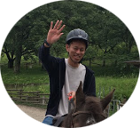
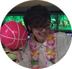

〒171-0014 東京都豊島区池袋2−68−9 池袋MIBビル5F
TEL / FAX 03-6907-1122 / 03-6907-1123
http://live-est.com
JR線 池袋駅 徒歩15分
西武池袋線 池袋駅 徒歩15分
東京メトロ 副都心線池袋駅 徒歩10分
Masumura Takuya
テクニカルソリューション事業部
エンジニア
入社を決めた理由は？
自分も大きく成長し、会社の成長に貢献したいと思ったことが一番の理由です。
入社前にライブエストの｢人生を最高に楽しむ｣というテーマを見て面白い会社だなという印象とともに、
｢仕事に対する姿勢｣を真剣に考えている会社の社風に感銘を受けました。
また石川社長の社員に対する愛情や社員全員を100％信頼してくれる姿が好きになりました。
この雰囲気があるから｢自分自身、もっと成長しよう！｣と思える心が産まれます。
現在の仕事内容は？
インフラ系のサーバ構築・更改案件として、お客様の会社で作業をしています。
サーバー周りのソフトウェア・ミドルウェアの維持、管理などを行っています。
これから目標は？
将来的には企業組織の安全なネットワーク環境を守れるような仕事をしたいです。
具体的には、ネットワークやセキュリティに興味があり、
今は業務に加え、様々な勉強や資格取得に向けて動いています。
まだまだ発展途上ですが、｢頼れるエンジニア｣になりたいです。
あなたの座右の銘は？
『なんでも真剣に』ということをいつも心がけています。
仕事は真剣にやって当たり前ですが、忘れがちな｢プライベート｣も"真剣"に楽しむ姿勢を常に持ち、
プライベートを真剣に楽しんだ分、今度は仕事を真剣にやる。
この相乗効果で、｢人生の充実と自身の成長｣を忘れないようにしています。
なぜIT業界に？
僕は異業種からの転職で、以前からコンピュータの発展が身近になる機会が増え、
将来的にも可能性のある業界だと感じてIT業界に転職しました。
初めはわからない用語がたくさんあり苦労したことも多かったですが、
今となっては良い経験になったと感じています。
常に勉強する姿勢、興味をもつ姿勢を忘れない意識付けができたのも、この業界に入ってからです。
Hashimoto Arika
ITソリューション事業部
セールスリーダー
入社を決めた理由は？
一言でいうと<理念共感>です。
私は前職から代表の石川と一緒に働いており、代表の会社への思いや理念に感銘を受けました。
LEにジョインできることに心がワクワクした感覚は今でも忘れられません。
ここで人生を謳歌したいと思い自ら入社を志願しました。
現在の仕事内容は？
セールスリーダーとして営業は勿論、部下のマネジメントを行っております。
エンジニアの方々が良き就業場所に参画でき、参画後も気持ちよく働けるようサポートをしております。
これから目標は？
営業のプロフェッショナルになる事多くの人と出会い、
人生の一部(仕事)をサポートし続けたいです。
あなたの座右の銘は？
「今、この瞬間を全力で楽しむ」
その時その瞬間を大切に生きるそして出会う人々との時間を大切にする
なぜIT業界に？
当時は「ライブエストで働きたい」という思いだけだったので、
業種や業務内容にあまりこだわりはありませんでした。
気が付けばIT業界に飛び込んでました。
世の中の基盤を支え発展の著しいIT業界で働けていることにやりがいを感じております。

Suzuki Masataka
テクニカルソリューション事業部
事業部長
入社を決めた理由は？
友人の話が決め手でした！
実は友人（友人T）がライブエストで既に働いていて、
よく飲んだりしていたんですが、当時20半ばの飲みなんで会社の愚痴…とか、疲れた…などなど。
周りが話してた時友人Tの口からはそんな話聞かなくて、会社をこうしたいだとか前向きな話ばっかで…。
そんなの見せられたらねー！？笑
てことで、石川社長と直接飲む機会を設けてもらって、社長本人と飲んで語って…。
気づいたら、今に至る訳です。笑
現在の仕事内容は？
現在は社内で自社サービスや受託したHPの制作を行っています。
まだまだ社内での開発は駆け出しで右も左も分からない状態なので試行錯誤の日々です。
でも辛い分やり甲斐は十分あります。
自分の考えを上に伝えられる環境があるし、それが間違っていたら正してくれる環境が確かにあります。
日々下駄を履いて、精進できる仕事です！
これから目標は？
まずはライブエストの代名詞となるシステムの構築。
そして、自分を含め全員がいろんな技術に触れられる環境。学べる環境の基盤構築です。
あなたの座右の銘は？
『他人は自分を映す鏡』
なぜIT業界に？
ライブエストに入社する前は飲食業界で働いていました。
接客は楽しかったんですが、私は昔からモノづくりに興味があり
生涯でしっかり形に残るモノを作れる技術が欲しいなと考えていました。
そこで、ノンスキルの自分でも自主学習だけで技術を身につけられるIT業界を選択しました。
5年目となった今でも会社が支給してくれる参考書を読んで、日々精進出来る充実した日々を過ごせています。
本当にこの業界を選択して良かったです！

Shida Chihiro
テクニカルソリューション事業部
エンジニア
入社を決めた理由は？
正直な話をすると、直感です。
石川社長と面接をした際に、
この会社だと色んなことにチャレンジが出来そうと感じましたし
人として成長が出来るのではないかと思いました。
それと、この会社でずっと働いていきたいなと、
その時純粋に思ったので入社を決めました。
現在の仕事内容は？
現在はお客様先で、SEサポート業務を主にやっています。
色んなことをやっていますが、ざっくりいうと
請求書のチェックや回線使用率をまとめたり、グラフにしたりして
SEの方が仕事に集中しやすいようにサポートをしています。
これから目標は？
現在、事務的なことを主にやっているので
これを活かせる仕事をしていきたいと思っています。
女性はエンジニアより事務関係のお仕事を探している人も多いと思うので
事務関係に特化したチームを作っていけたら面白いかなと思っています。
その為に、MOSや簿記などの資格を取得をし、
いずれは未経験の方たちに教えていけるようにしたいと思っています。
あなたの座右の銘は？
そこで諦めたら試合終了だよ。という有名な台詞がありますが強い意志をもって、
諦めずに苦労や困難にもくじけなければ必ず目標は達成できると信じています。
なぜIT業界に？
前職はアパレル企業で接客の仕事をしていたので、全く業種は違ったのですが年齢を重ねても続けていける仕事、
また、IT業界はこの先将来性があると思いこの業界に興味を持ちました。
あとは、単純に電化製品が好き、ゲームが好きというのも１つの理由です。
Tarukawa Shouta
テクニカルソリューション事業部
エンジニア
入社を決めた理由は？
LEならいい意味でやりたい放題できる。と感じたのが大きな要因です。
石川代表と面接をしてる際に言われた
「やりたいことは一緒にやろうよ。」
「将来やりたいことは？」
「今、君は知識も何もいらない。これから学んで、力がついたら一緒になにかやろう。
その時はどんどんアイデアだしてよ！ITだけでやっていく気ないし！」
この言葉に驚きました。
ここまで社員の意見を汲んでくれて、応援してくれる代表はそうそう居ません。
一度きりの人生、平凡に生きるのが嫌だった。私には最高の言葉でした。
現在の仕事内容は？-
お客様の会社で新卒採用支援システムの運用・データベースの運用業務がメインです。
これから目標は？-
現在はwebデザインに興味があり、将来的にはUI・UXデザインまで手がけれるようになりたいです。
あなたの座右の銘は？
「好奇心だらけの人生」
様々な事に興味を持つ事で話の幅が広がるし、自分の知らない世界・思想を肌で感じれます。
私はwhy？で常に頭の中がいっぱいです。
なので毎日1つは気になったことを調べて
それについて考えたりしてます。（まるで厚切りジェイ○ンですね）
最近で言うと、なぜ「女子はパンケーキが大好きなのか。」
これについて熱く語れる方を募集しております。
なぜIT業界に？
元々、webデザインに興味があり、自分で作ったものが世の中に出るのはカッコいい！！
頭が悪くてもITなら努力次第で稼げる！と稚拙な考えでIT業界を志望しました。
算数・数学が苦手でしたので不安は大きかったですが苦手意識を無くし、
正面から立ち向かえば文系の人間でもIT業界で戦っていけると感じました。